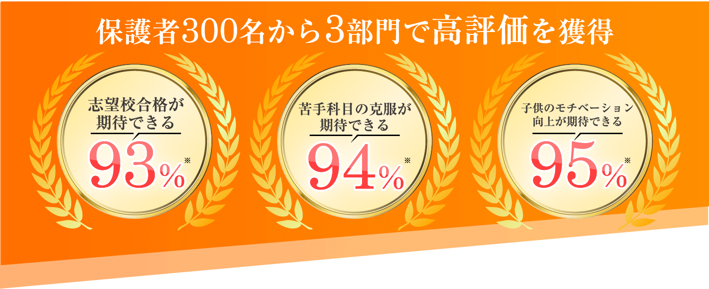
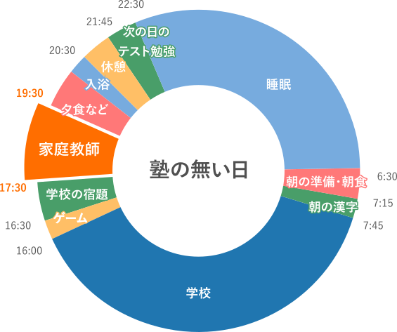
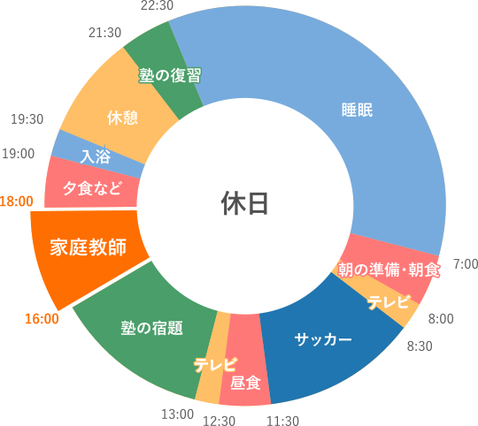
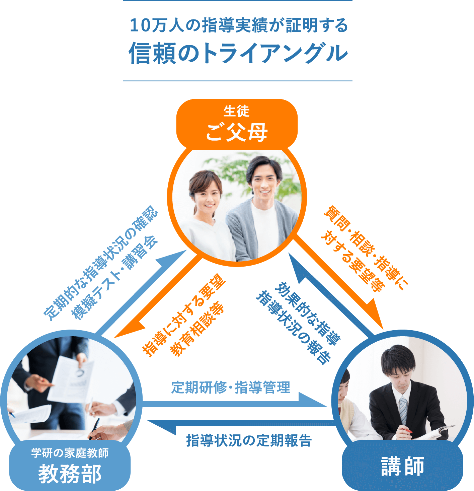

※実施委託先：日本ビジネスリサーチ/調査期間：2023年2月22日～2月23日/調査方法：サービス情報を閲覧した上でのWEB上イメージ調査
調査対象：家庭教師サービスに興味があり塾または家庭教師サービスを利用したことがあるお子様をお持ちの保護者の方 331名


中学受験の合格実績
学研の家庭教師だからこの実績!
有名中学・難関中学への合格者続出!
-
首都圏エリアの
合格実績を見る -
東海エリアの
合格実績を見る -
関西エリアの
合格実績を見る
※学研の家庭教師は、難関校への合格実績だけを追うのではなく、
生徒一人ひとりの小さな変化・日々の成長・前向きな努力も、
実績として大切にしています。
他と比べてみてください。
学研の家庭教師ならこんなに違う!
-
他社との比較表
-
講師の登録数
-
講師の採用率
-
合格実績
-
指導料
-
学研の家庭教師
-
12万人
-
4%
-
4,290円～/時
-
A社
-
22万人
-
40%
-
4,950円～/時
-
B社
-
全国
-
20%
-

-
6,050円～/時
※当社調べ
30年間の実績で培われたノウハウがあるので
あらゆるニーズにお応えする自信があります!
-
1的確な状況分析力
家庭教師をより良く活かすために、状況分析を行います。
現在の学力、学習状況はもちろん、講師との相性も含めて
見極めます。分析に基づいたカリキュラムを策定いたします。 -
2安心の講師選抜力
講師は、中学受験経験者または中学受験指導経験者です。分
析結果に基づいて講師を選抜し、その中から個別の適性検査・面接をクリアした講師をご紹介します。 -
3抜群の講師研修力
受験情報や指導方法、スケジュール管理など、学研のノウハウ
を凝縮した独自の研修を行います。その研修を受けた引き出しの多い講師が指導にお伺いします。
はじめるなら今がお得!
保護者のみなさま、
こんなことで
悩んでいませんか？
塾に通ってるけど
結果が出ない
塾の授業に
ついていけない
塾で
上位クラスに
あがれない
第一志望の
合格圏に届かない
受験勉強
何からすれば
いいかわからない
学研の家庭教師に
すべておまかせください!
家庭教師で選ぶなら、学研!
「学研にしてよかった!」という声、
おかげさまで、いま、増えています。
悩みを解決する
学研の家庭教師の5つの強み
家庭教師なんてどこも同じなんて思っていませんか?
いえいえ、学研だからこそできる強みがあります。
どこよりも厳選された
自慢の家庭教師陣
適性検査や面接などで「指導力・人物ともに合格」と判断された8％の人材のみを採用しています。お子様をしっかりと受け持つ責任感が強い自慢の講師陣です。
プロ講師の声
プロ家庭教師
梶原 成之先生
「短期間で成し遂げた、合格までの道のり」
この仕事を始めて十数年経ちますが色々あった中で印象的なエピソードを２つご紹介いたします。
先ず一つ目は慶應中等部に合格した生徒です。小学５年生の時、出会った初めは偏差値４５以下で、授業中居眠りをしたり、嫌だ嫌だの連発でした。私が先ずやった事は、算数は基礎の徹底、社会は不得意な歴史のノート作り、理科は疑問点の払拭、中でも出来ていた国語は漢字語句知識のマスター等です。一年が経ち力はついてきたのですが、本人に模擬試験に対して苦手意識があり成績が思うように上がりません。
そこで６年生の６月から早めに志望校対策を始めました。二人で志望校の問題のクセを見つけそれに合わせて作戦を練り実行に移しました。そして生徒の志望校合格の強い思いを刺激しつつ対策を続けました。
ただ模擬試験の偏差値は志望校に全く届かな致し日々が過ぎてゆきます。途中ご両親から第一志望を諦めようとのお話がありましたが、過去問には好印象を持っている生徒の気持ちを第一にし、ご両親に第一志望は変えないようにお願いしました。
そして入試が始まり私はハラハラドキドキしながら結果の連絡を待っていました。「合格した！」と連絡を受けた時は何が何だかわかりませんでしたが、生徒の弾んだ声を聞いているうちに涙が止まらなくなりました。
２番目のエピソードは、早稲田中に合格した生徒です。出会いはちょっと遅く６年生の5月でした。出会った時の印象は真面目でしっかり勉強をしていそうでした。ただこれが後々苦労する原因となったのです。
先ず私が手につけたのは、算数の正確な計算、理科社会の『解らないノート』（解らなかった所をメモする）の作成、国語語句文法知識の理解及び文章読み合わせ、等です。
生徒は真面目ですから私が提示するものをやろうと努力するのですが膨大な大手受験塾の宿題をやらなければならず私の分は手をつけられない日々が続きました。私の方から大手受験塾の宿題はやらなくていいものはしない様に話をしましたが生徒は根が真面目なために宿題をいい加減には出来ません。同様に模擬試験の偏差値も上がらずのまま。そして夏休みとなり私の方から試験の点数を7割以上取る練習をしようと提案し、私の授業ではそれをやることになりました。早稲田中は7割以上取ると合格するのでそこを目標としたのです。
そうしているうちに模擬試験の成績もだんだん上がり合格圏内までの偏差値差が１０～７まできました。また入試１か月前になるとさすがに塾の宿題より過去問に集中できるようになり、入試の日がやって来ました。時間不足はありましたが何とかカタチは整いました。
次の日「合格！」の電話が届きました。
どこよりも満足度が高い
満足度98%のマッチング
学研の家庭教師は、全国規模ならではの安心感とスケールメリットが強み。「ただ家庭教師を紹介する」ではなく、一緒に目標に向かって頑張っていける先生、尊敬しながらも安心できる先生をマッチング。
その結果、「家庭」「講師」の双方から好評を得ており、
98%の会員様に満足していただけています。
どこよりも合格に直結した
オーダーメイドカリキュラム
受験校合格や成績向上を目標にした、一人ひとりに合った効率的な学習カリキュラムを作成。
塾のクラス上げのためのテスト対策カリキュラム。
塾の宿題の管理から、志望校合格に向けた過去問対策まで。
これまで10万人を超える指導実績を活かし、様々なご要望に
お応えします。
一人ひとりの学習状況や習熟度に応じて、作成します!
※講師によって作成方法が異なる場合があります。
塾に通っている生徒さんの場合
塾から出された膨大な宿題の整理や、学習進捗に応じて、取り組むべき内容の優先順位を定めます。塾では理解できなかった問題も、個別で授業することで、すぐにカバーできます！

休日に集中したい生徒さんの場合
休日は習い事もあって、受験モードが緩む瞬間。 だからこそ付きっ切りでフォローいたします。宿題のチェックから、次回の塾で行う内容の予習まで、徹底的にサポートします！

どこよりも徹底した
進捗管理、成果主義
目標達成までの学習管理を綿密に行うことで、一人ひとりの学力をしっかりと向上!
専任の教務スタッフが、お子様の理解度、テストの結果などを分析し、生徒さんにピッタリ合った学習カリキュラムを随時見直します。
どこよりも差がつく
学習指導
内的動機づけを促す指導で、「自分でできる」が「自分はできる」に変わっていき、自己肯定感を培っていきます。
その結果、「勉強が楽しい!」「いつの間にか成績が伸びていた」という、学研ならではの体験をしていただいています。
だから、
学研の家庭教師は
どこよりも差がつく!
さあ、次はあなたも!
まずは、資料請求からはじめてみませんか？
早く始めれば始めるほど、大きく差は開きます。
「学研の家庭教師」合格者の声
※プライバシーに配慮して、画像はイメージです。
息子は元々、自分で勉強することが苦手で「勉強はできればしたくない」「でも志望校には合格したい」と話しており、どのように勉強させればいいか悩んでおりました。
塾の宿題が進んでいないこと（勉強をしないこと）を指摘すると親子喧嘩になるので、できるだけ喧嘩にならないように気を遣っておりました。
学研の家庭教師に頼みだしてからは、先生に「ここは必ずやるように」「ここは受験校に必要ない（問題のレベルが高すぎる）のでやらなくてよい」など教えてもらえるので、的を絞った勉強ができるようになりました。
塾の宿題はとにかく多いので、「ここは時間があったらやるでもいいよ」と言ってもらえるのがうれしかったようです。あと親にできないことを指摘されたくないが、先生の指摘は素直に聞けるようでした。
親は本当に勉強が身になっているのだろうかと心配することが減りました。
親子喧嘩の回数も減ったと思います。それでも喧嘩になってしまったあとには先生にお話をきいていただき、母のフォローまでしていただきました。
塾だけではどこがその単元のポイントなのか、志望校合格のために必要な問題なのかがわからず（少しレベルの高い問題にてこずって宿題が進まないことが多々ありました）、漫然と勉強してしまっていたと思います。
自分で自分の勉強の振り返りができる子であれば塾だけで十分かと思いますが、息子はできない子でしたので、何が足りていないのかを先生に教えてもらい、そこを重点的に復習するという方法はとてもあっていたと思います。
親は子供の勉強が志望校合格に向けてどれほど進んでいるのか、理解度はどうなのかなどわかりませんので、経験豊富な講師の先生や教務の方にアドバイスいただけることがありがたかったです。
中学受験コース受講中 Sさん親子
※プライバシーに配慮して、画像はイメージです。
僕は、算数は得意なのですが国語や社会がなかなか点数が取れなくて今の先生に授業をしてもらっています。 先生は、僕の志望校である浅野中学出身の先生で、授業をわかりやすく説明してくれるのはもちろん、先生の中学生時代の話も途中で話してくれるので楽しく勉強ができています。そのおかげで、少しずつですが、成績が上がってきています。これからもよろしくお願いします。
息子もまだ6年生なので、中学受験の道半ばですが、中学受験をお考えで家庭教師を検討されている方のご参考になればと思い、体験談を書かせていただきます。
息子はサピックスに通っていますが、特に国語や社会のような暗記科目が苦手で塾でも質問に行けないようで成績が伸び悩んでおりました。そんな状況を何とかしてあげたいと思い、家庭教師を付けることを検討しました。
色々な家庭教師会社さんを検討しましたが、親身に話を聞いてくれる教務部のスタッフさんと息子の学習状況に合わせた先生を紹介してくれたため、「学研の家庭教師」さんでお世話になることを決めました。
豊島岡女子学園中学校合格 Tさん親子
※プライバシーに配慮して、画像はイメージです。
私が豊島岡女子学園中学校に合格できたのは、お母さんお父さんの支えとプロの先生の指導やアドバイスがあったからだと思います。
プロの先生に小学5年生の夏頃から勉強を見てもらいました。算数が苦手で塾の模擬試験では合格率20％がほとんどでした。塾でも算数を勉強していたのですが、なかなか成績が上がらず、悩んでいました。しかし最後まであきらめずに入試を迎え、合格できたのは、「絶対合格してやる！」という思いとプロの先生の志望校対策のおかげだと思います。自分だけでは絶対に気づかない学校ごとの傾向をしっかりと分析してくれて、その上に何をすればいいのかまで細かく説明してくれました。
また、勉強面はもちろん、私のモチベーションを上げるために、面白い話や勉強のために話など、様々な話をしてくれて元気をもらいました。
最後の最後まで、指導や励ましてくれたプロの先生や、温かく見守ってくれた家族に感謝の気持ちを伝えたいです。本当にありがとうございました。中学校でも勉強を頑張っていきます。
娘は、小学４年生から某中学受験塾に通い、受験対策を進めておりましたが、算数が思うように伸びず悩んでいましたので、何とかしてあげたいという気持ちで学研さんを検討しました。中学受験も本人がやりたいと話して始めたため、お恥ずかしながら塾には通わせているものの、ほとんど娘本人に任せっきりだったため、成績もあまり把握していませんでした。
うちでは、プロの先生に週1回120分のフォローをお願いしておりましたが、毎回レッスンいただいた後に、娘の成績状況や学習状況のフィードバックをしていただき、親としても大変助かりました。
また、受験情報についても、学研さんやプロの先生から親切に教えていただきましたので、不安は全くなかったです。
プロの先生に来ていただけるようになってからは、フルスロットルで時間さえあれば自ら勉強に向かうようになりました。楽しそうに勉強する姿とこれまでできなかった問題が解けた時に、嬉しそうに「この問題できたよ！」と報告してくれる娘の姿を見て、親として感銘を受けました。
先生には、娘に時には厳しく、親身にサポートしていただき、合格まで導いていただき感謝しております。余談ですが、4月から娘は楽しそうに学校生活を送っています。
最後になりますが、最後まで親身にサポートしてくださったプロの先生、学研さんには大変お世話になりました。心から感謝しております。
第一志望合格 Rさん親子
※プライバシーに配慮して、画像はイメージです。
僕は3校受験してすべての学校に合格出来ました。家庭教師の先生がいなかったら、絶対に合格出来ていなかったと思います。先生は僕が受験する学校のレベルに合わせて問題を選んでくれました。ここの学校はこのレベルの問題が出来ていたら大丈夫、ここの学校ならこのレベルまでは出来ておこうと的確に指示してくださいました。先生がいなかったら塾のテキスト全部やっていたと思いますし、どこかで心が折れていたと思います。
今僕は入りたかった中学校で楽しく過ごしています。僕の人生を変えてくれた先生、そして親に感謝で一杯です。
小学5年生の冬からお世話になりました。もしも塾だけの勉強だとしたら、どこがその単元のポイントなのか、志望校合格のために必要な問題なのかがわからず、漫然と勉強してしまっていたと思います。自分で自分の勉強の振り返りができる子であれば塾だけで十分かと思いますが、息子はできない子でしたので、何が足りていないのかを家庭教師の先生に教えてもらい、そこを重点的に復習するという方法はとても合っていたと思います。
また、先生は息子の性格を考慮してくださったのか、過去問に取り組む時期をだいぶ前から取っていただきましたので、受験前に仕上げ切れたのではないかと思っています。
綱渡りのような受験でしたので終わったという安堵とともに、5年生からの受験勉強を振り返ると肝が冷えるように感じることもあります。
今息子は第一志望校に通い、級友や部活の友達ととても楽しく中学生活を送っています。 もし先生に来ていただいていなかったら今の生活はなかったと思うので感謝しかありません。
はじめるなら今がお得!
コース一覧・料金
学研の家庭教師は、安心の『月謝制』。
高額教材のセット販売などもございません。
-
中学受験コース
対象
小学3年生～小学6年生1時間あたり 4,290円（税込）～
受験に向けた基礎固め、中学受験事始め、進学塾サポート、中堅校対策に
おすすめ。中学受験経験、または中学受験の指導経験のある学生や社会人の講師が担当するコースです。受験準備のための基礎固めから、進学塾サポートや志望校対策まで幅広くサポートします。 -
中学受験準備プロコース
対象
小学1年生～小学3年生1時間あたり 7,700円（税込）～
受験に向けた基礎固め、中学受験事始めにおすすめ。
中学受験専門の選りすぐりのプロ講師が、中学受験の準備段階から徹底サポートします。 小学校低学年のうちに思考力・判断力・表現力を意識した授業を行います！ -
中学受験プロコース
対象
小学4年生～小学6年生1時間あたり 8,910円（税込）～
進学塾サポートや志望校対策におすすめ。
合格実績のある精鋭プロ講師が、塾の宿題の管理から過去問対策まで、
ムリ・ムダなく合格までの最短ルートをナビゲート！ -
難関中学受験プロコース
対象
小学4年生～小学6年生1時間あたり 11,000円（税込）～
開成、筑駒、桜蔭、灘等、全国トップレベル中学対策におすすめ。
全国最難関中学に合格実績のあるトップレベル講師陣が、過去問分析から新傾向問題対策まで万全の徹底サポート！やり残しや悔いなく、受験本番まで導きます！
※授業内容のご要望により、料金は変動いたします。
※オンライン授業の料金は上記と異なります。詳細はお問合せください。
一人ひとりにベネフィットする教育を可能にするために
「学研」の家庭教師は講師の質にこだわります

「すべては子どもたちのために」それが私たち、学研・塾グループ共通の想いです。
そして、子どもたちに直に接するのは、先生 ― つまり講師。登録数10万人超の豊富な講師陣から多様なニーズに対応します。
だから、
学研の家庭教師は
どこよりも差がつく!
さあ、次はあなたも!
まずは、資料請求からはじめてみませんか？
早く始めれば始めるほど、大きく差は開きます。
体験指導までの流れ

{kind=link}
{kind=link}
{kind=link}
{kind=link}
{kind=link}
{kind=link}
{kind=link}
カウンセリング
体験指導
（トータル所要時間：約60分）

大切なのは、家庭教師というスタイルがお子様に合っているかをしっかり判断することです。「自分に合った勉強のやり方」をみつけることが成果につながります。まずは家庭教師の雰囲気を味わっていただき、お子様の反応を見てください。
※地域や指導内容により上記と異なる場合がございます。
詳細はお問い合わせください。
学研の家庭教師体験レッスンの
3つのポイント
- ❶お子様の現在の実力がわかります
- ❷お子様にぴったりの勉強方法が見つかります
- ❸今までの家庭教師との違いがわかります
ご入会を強くおすすめすることはありませんので、
ご安心ください。
よくあるご質問
大切なお子様の勉強方法ですから不安なことも多いはずです。
その他、ご不明な点などございましたら、お気軽にお問い合わせください。
成績についてのご質問
ほんとうに成績は上がりますか？
学研の家庭教師は、教務部に対して毎月の報告を義務付けております。「指導報告書」「定期ミーティング」「個別ミーティング」のシステムにより、お子様の指導状況をチェックし、目標達成までの学習管理を教務部のバックアップにより綿密に行いますので自主学習の習慣と共に学力が向上していきます。
受験対策は大丈夫ですか？
1対1だと競争心がなくなったりはしませんか？
弊社は、受験対策として模擬テストをおすすめしており、 夏期講習・冬期講習も一部教務センターにて実施しております。 偏差値や志望校到達率の把握や単元別の習熟度チェックから、テスト慣れ、 会場慣れに至るまで、受験生のサポートはお任せください。
家庭教師についてのご質問
家庭教師は、アルバイト感覚ではありませんか？
弊社では多くの登録希望家庭教師の中から、学力だけでなく指導力や責任感等の家庭教師としての適正検査「YGPI」を実施して合否を決めております。紹介後も日々の指導状況から毎月の指導報告を義務付けるなど、しっかりとした管理をしておりますのでご安心ください。
本人との相性は合うのでしょうか？
要望や条件を詳しくお伺いし、専門のスタッフが選考にあたり、 ミーティングをした上で紹介しておりますので安心です。弊社は30年以上の実績により家庭教師の登録数も豊富なので、お子様にピッタリの家庭教師を紹介できるシステムとなっております。
家庭教師交代、進路相談などはできるのでしょうか？
大丈夫です。何かありましたら、すぐに弊社へご連絡ください。教務部による管理体制を整えておりますので、担当社員・スタッフが迅速に対応いたします。家庭教師個人ではまかなえないことを全て教務部でサポートさせていただきます。
学び方についてのご質問
特別な教材を購入しないといけないのですか？
弊社は、高額教材のローン契約による販売などは一切ありません。 お子様がお持ちの教科書等で指導を行うことができます。
勉強部屋がないのですが？
ご安心ください。リビングなどでも指導は可能です。また、自宅以外の場所で授業を希望される場合には、近隣の公共施設や家庭教師宅指導もございます。まずは一度ご相談ください。
弊社についてのご質問
テスト前の短期間だけでも申し込みできますか？
テスト前や、夏休みだけなどの短期間もお任せください。目的に応じた指導計画を立て、集中特訓を組むことができます。
病気で休んだり、用事で休んだりすると授業料はどうなりますか？
休んでしまった場合はその分の振替授業を行えます。それによって別途料金がかかることもございません。
やめたくても簡単にやめられないのではないですか？
弊社は1ヶ月前までに退会の申し出をいただければ、 いつでも退会することができます。その場合解約料は必要ありません。 また、退会申告できない場合であっても、1ヶ月分の指導料より高いお金はいただきません。 もちろん、保証金等もございません。